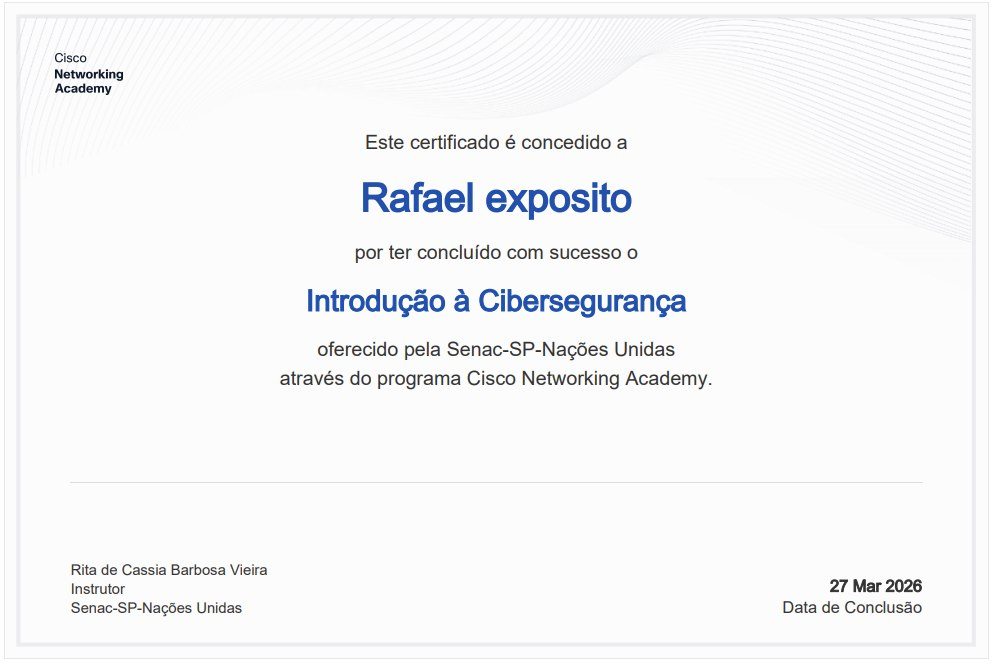
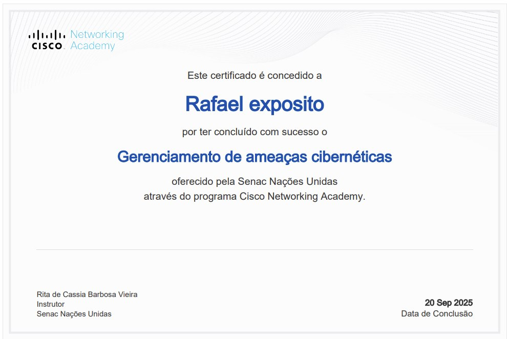
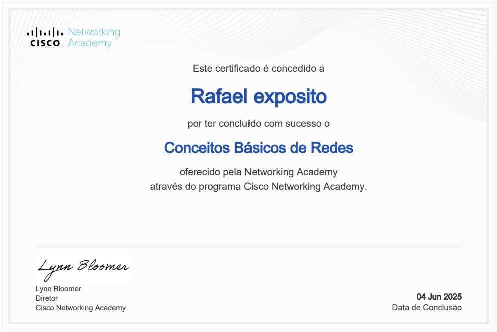
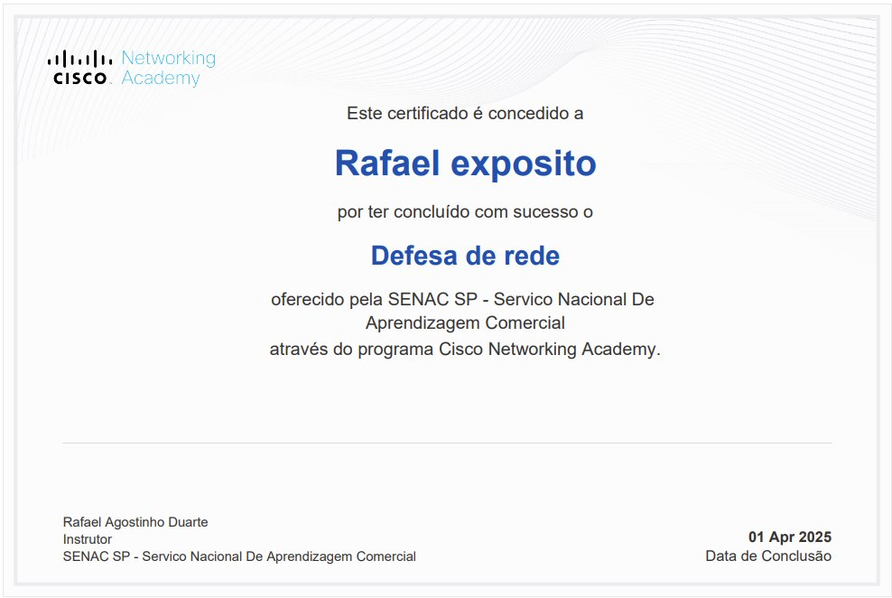

Resumo
Estudante do 3º ano do Ensino Médio Técnico em Internet das Coisas no Senac, com experiência prática em projetos com microcontroladores ESP32, câmera ESP32-CAM, sensores e banco de dados. Programo em Java, modelo bancos de dados com MER e SQL e desenvolvo páginas web com HTML, CSS e JavaScript, como este portfólio.
Ao longo do curso, desenvolvi trabalho em equipe em projetos com grupos de até seis pessoas, apresentei seminários e participei de simulações de negociação. Tenho interesse em gestão e negócios e quero unir tecnologia e administração na minha carreira.
Objetivo
Cursar Administração na Universidade Presbiteriana Mackenzie e, no futuro, empreender com a minha própria empresa. Enquanto isso, busco oportunidades de estágio ou jovem aprendiz nas áreas de tecnologia, automação ou administração.
Formação
- Ensino Médio Técnico em Internet das Coisas, Senac (2024–2026, em conclusão)
Programação (algoritmos e Java), banco de dados (MER e SQL), microcontroladores e sensores, automação, redes e desenvolvimento web.
Projetos técnicos
- Mini Fábrica Inteligente (2026): linha de produção em miniatura com ESP32, câmera ESP32-CAM para capturar imagens dos objetos e banco de dados para registrar a produção.
- Sensor de Ré: sistema que mede a distância até um obstáculo e emite um alerta quando ele se aproxima, como nos carros.
- Portfólio pessoal (2026): site com 29 páginas em HTML, CSS e JavaScript, com menu responsivo, carrosséis e layout adaptado ao celular.
- Projetos de automação (2025): atividades práticas de automação no 2º ano do curso técnico.
- Modelagem de banco de dados: diagrama MER e comandos SQL (atividade avaliada com menção).
Projetos acadêmicos
- "O que Dizem os Números": pesquisa estatística completa, da criação do formulário on-line à análise dos dados e ao painel de resultados.
- Matemática Financeira: análise de situações reais de orçamento familiar.
- Simulação da Conferência de Paris de 1919: negociação em grupo representando delegações internacionais.
- Documento de Posição Oficial (DPO 2026) e Projeto de Lei: escrita argumentativa e propostas para problemas sociais.
- Seminário sobre Realismo e Naturalismo e Mostra de Artes: apresentações em público.
Experiências e atividades
- Visita técnica à Sandvik, em Jundiaí (17/09/2026)
- 12ª Maratona Cisco (redes)
- Atividade Integrada do 2º bimestre, em grupo de 6 pessoas
- Simulação de entrevista de emprego em inglês ("Tell me about yourself")
- Prática semanal de programação em Java no CodingBat
Competências técnicas
Ferramentas
Habilidades pessoais
- Trabalho em equipe: projetos em grupo durante os três anos do curso
- Comunicação: seminários, apresentações de slides e simulações de negociação
- Resolução de problemas: testes e correções em projetos de programação e eletrônica
- Visão de negócios: interesse em gestão, finanças e empreendedorismo
- Adaptação: superei as dificuldades do 2º ano e terminei o curso mais preparado
Idiomas
- Português: nativo
- Inglês: em desenvolvimento, com foco em apresentação pessoal e entrevistas
Cursos e certificados
- Curso de HTML, CSS, JavaScript e Firebase (3 horas)
- 12ª Maratona Cisco


Introdução à Cibersegurança
Cisco Networking Academy, concluído em 27/03/2026.


Gerenciamento de Ameaças Cibernéticas
Cisco Networking Academy, concluído em 20/09/2025.


Conceitos Básicos de Redes
Cisco Networking Academy, concluído em 04/06/2025.


Defesa de Rede
Cisco Networking Academy, concluído em 01/04/2025.